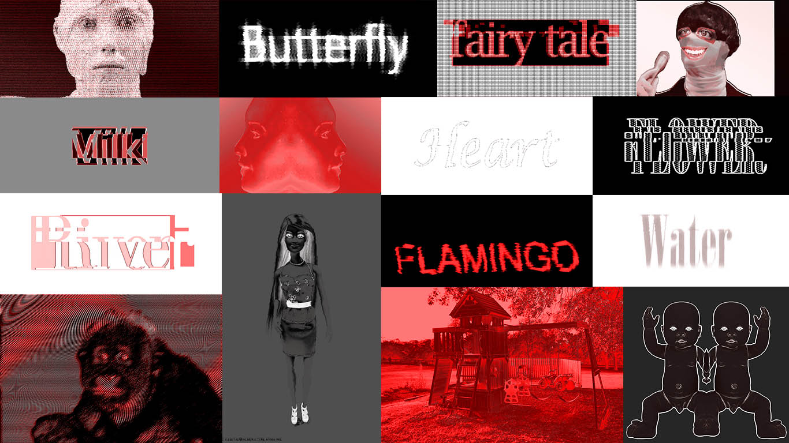
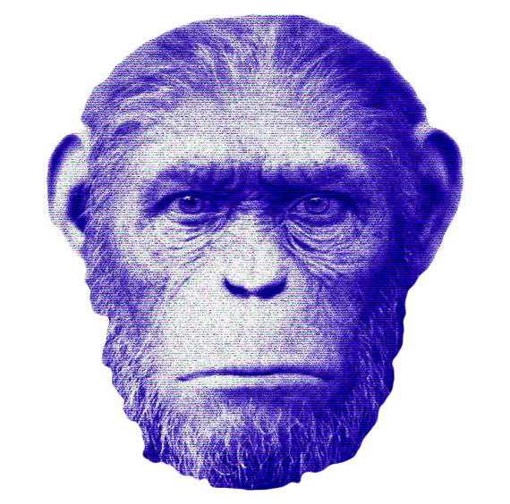

언캐니(Uncanny)
기이한, 이상한, 묘한 어근이 되는 heim는 '집' 또는 '안락함','편안함'이라는 뜻을 지닌다.
여기에 un이 붙게 되면 낯설음, 불편함 등의 뜻이 된다.
친숙하면서도 어쩐지 낯설고 두려운 감정을 정의한다.
Uncanny에 대한 생각은 과거부터 지금까지도 의문이 제기된다.
어떻게 낯설고 두려운 존재 또는 그러한 분위기에 친숙함을 느낄 수 있을까?
왜 우리는 돈을 내면서까지 기괴함을 경험하러 가며
괴로워하면서도 계속 Uncanny한 것들을 찾는것일까.

불쾌한 골짜기?
불쾌한 골짜기란 로봇공학 이론에서 시작됐다.
"인간과 흡사한" 로봇과 "인간과 거의 똑같은"
로봇 사이에 존재하는 로봇의 모습과 행동에 의해
느껴지는 거부감이 존재하는 영역을
불쾌한 골짜기(uncanny valley)라고 한다.
인간은 인간과 어설프게 닮은 대상을 오히려 혐오한다.
불쾌한 골짜기 이론은 로봇공학을 벗어나서
인간과 어설프게 닮은 대상에게서 느껴지는
혐오감을 이르는 단어로 넓게 변형되었다.